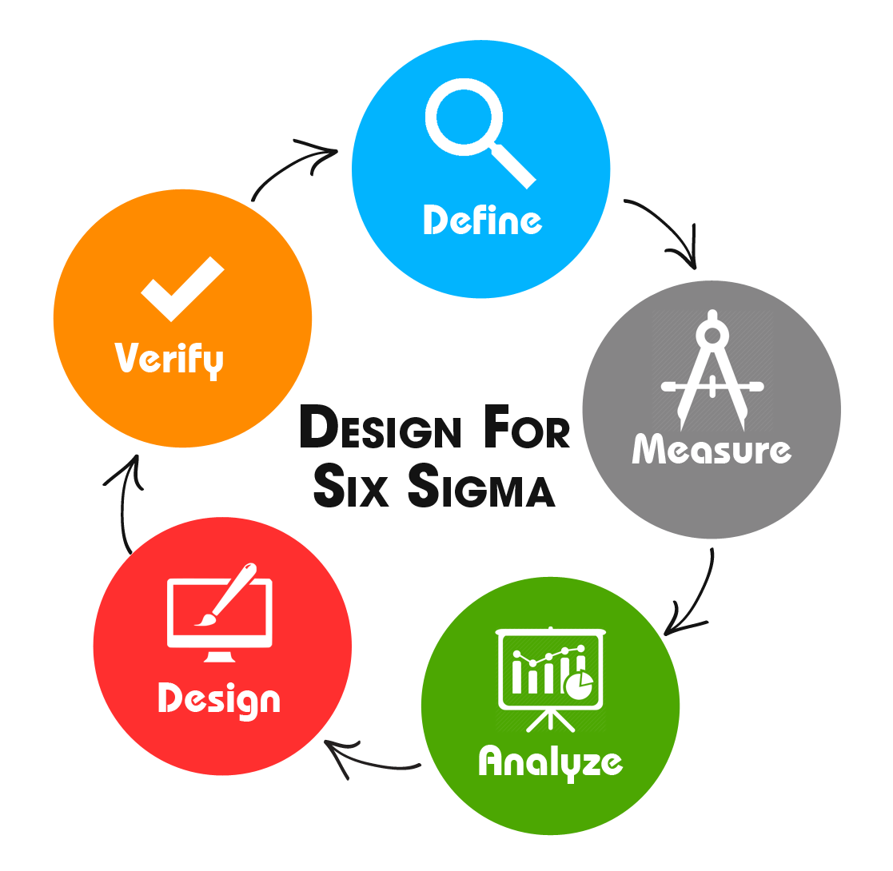

Cisco Networking Academy
Redes, Seguridad y IoT — Credenciales verificadas en Credly
Internet of Everything
Fundamentos de IoT y conectividad de dispositivos inteligentes
Introduction to Cybersecurity
Amenazas, vulnerabilidades y buenas prácticas de seguridad
CCNAv7: Enterprise Networking, Security & Automation
Redes empresariales, seguridad avanzada y automatización de infraestructuras

Alura LATAM
Programación Web, Lógica e Internet — 2024
HTML & CSS — Partes 1-4
Maquetación web, diseño responsivo y buenas prácticas
Lógica de Programación con JavaScript
Fundamentos de programación y sintaxis JavaScript moderna
Hábitos: Ser Productivo
Gestión del tiempo y cumplimiento de metas personales
HTTP: La Base de Internet
Protocolos HTTP/HTTPS y comunicación cliente-servidor
Certificado Oficial
Ver el certificado completo emitido por Alura LATAM con todos los cursos

Lean Six Sigma
Metodología de mejora continua y gestión de calidad
Lean Six Sigma White Belt
Certificación en la metodología Lean Six Sigma para mejora de procesos, reducción de defectos y optimización operacional. Base sólida para gestión de calidad en entornos empresariales.
Sobre Mí
Soy Oscar Aaron Guzman Hinojosa, originario de Guadalajara, Jalisco, México. Apasionado por el funcionamiento de las cosas — tanto tecnológicas como naturales. Actualmente estudio la licenciatura en Biología en la Universidad de Guadalajara, combinando mi formación científica con una profunda vocación tecnológica.
Con más de 2 años de experiencia como técnico de hardware y software, me especializo en reparación de teléfonos móviles y laptops. Mis habilidades técnicas incluyen dominio de HTML, CSS y JavaScript, con un enfoque en aprender React. Mi objetivo a largo plazo: consolidar Ageron Systems como referente en diseño web y servicios TI.
Poseo certificaciones relevantes como Lean Six Sigma White Belt y CCNAv7 en Redes Empresariales, Seguridad y Automatización. He participado en cursos adicionales sobre IoT y Seguridad Cibernética.